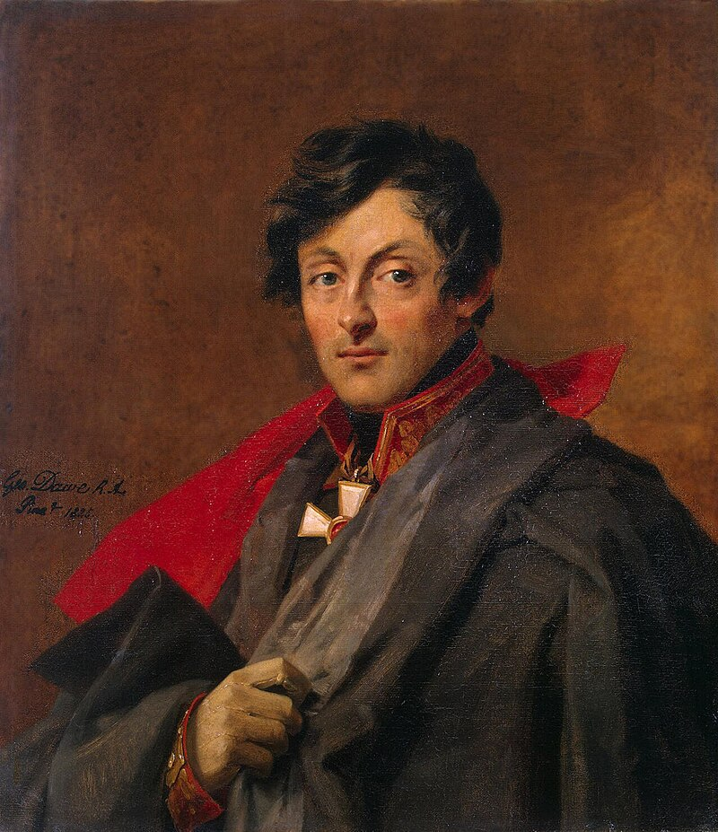
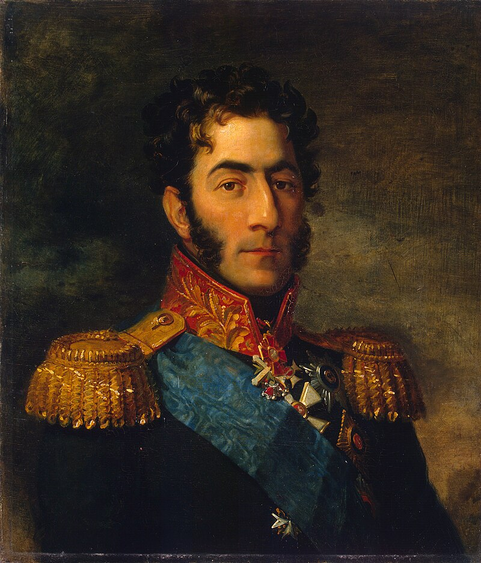
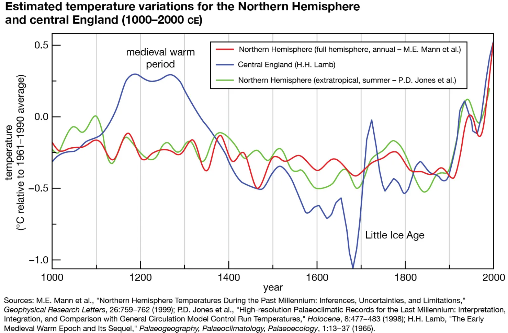
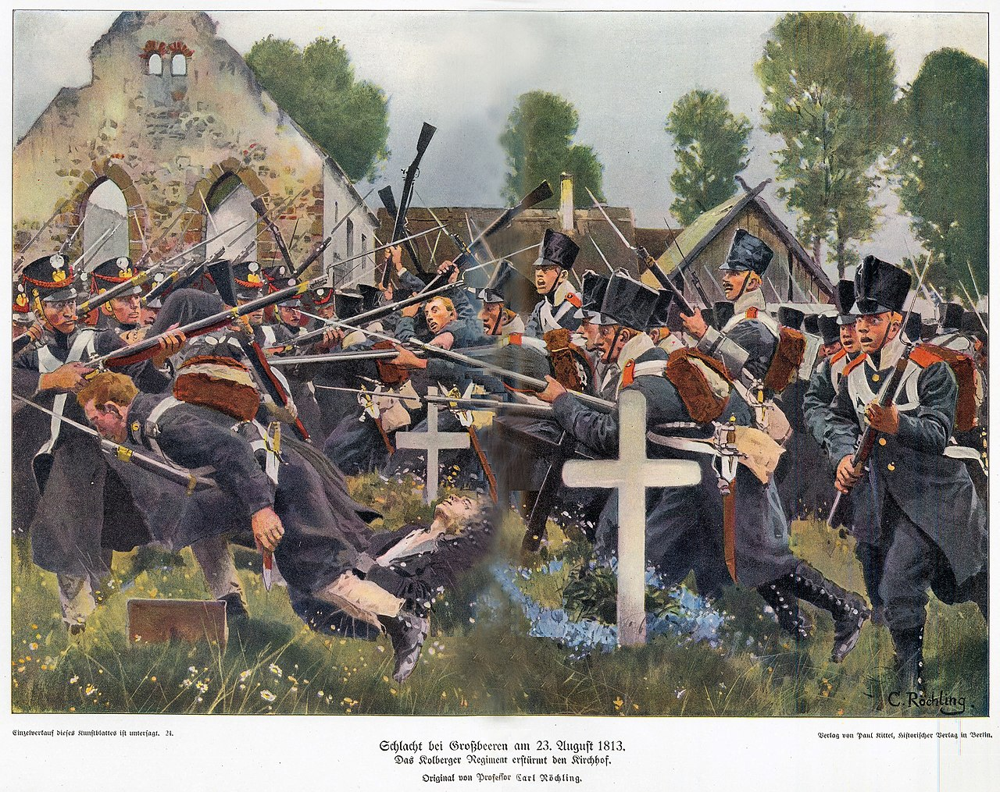
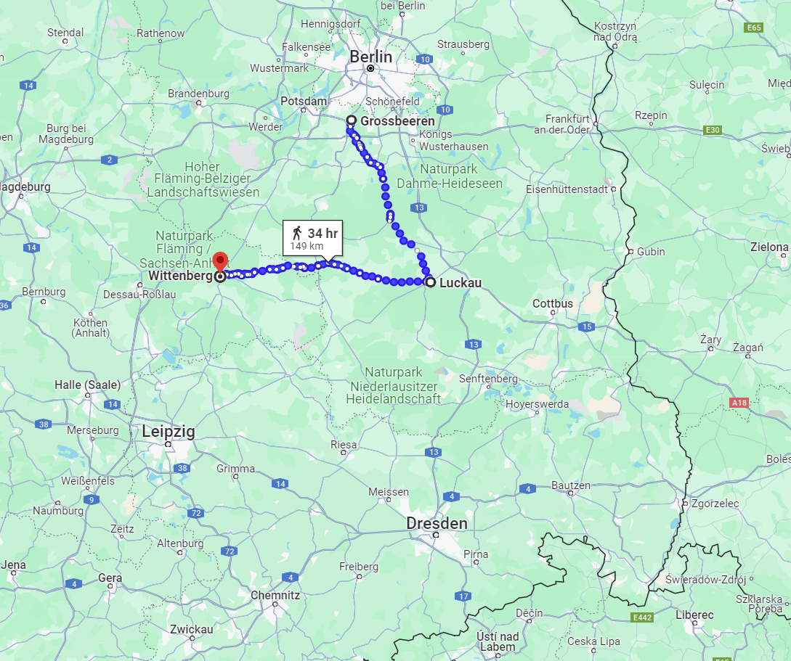
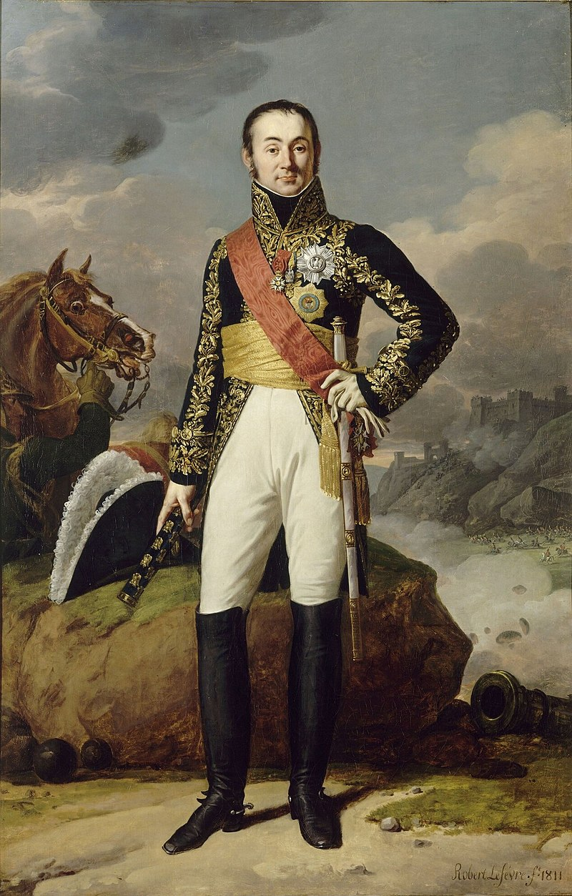
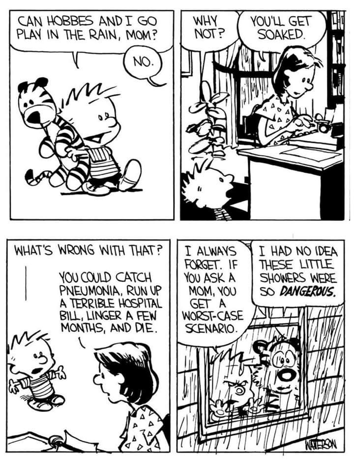

드레스덴 전투 (10) - 기후 변화의 피해자
게시: 2024-04-22T06:30:25+09:00
오후 2시 즈음 도착한 파발마가 가져온 소식은 바로 어제 벌어진, 저 남쪽 피르나에서의 패전 소식이었습니다. 강을 건너 급습한 방담의 그랑다르메 제1군단에게 뷔르템베르크 오이겐 백작이 밀려났다는 소식이 그제서야 도착한 것입니다. 말로 달리면 불과 몇 시간 거리인 피르나에서의 소식이 왜 그제서야 도착했는지는 다소 의문입니다. 혹은 그 소식은 어젯밤에 도착했지만, 8월 27일의 전황이 생각대로 풀리지 않자 유사시 퇴각 방향인 피르나 상황에 대한 걱정이 갑자기 더 커졌는지도 모르겠습니다. 아무튼 까딱하다가는 드레스덴 점령은 고사하고 퇴로가 끊길 수도 있게 되었다는 생각에 화들짝 놀란 보헤미아 방면군 수뇌부는 오스테르만-톨스토이(Alexander Ivanovich Ostermann-Tolstoy) 백작의 러시아 군단 약 1만5천을 피르나 방면으로 급파하여 방담을 견제하도록 했습니다. 그러나 방담의 제1군단은 3만5천에 달하는 대군이었습니다. 톨스토이와 뷔르템베르크가 합세한다고 해도 방담을 패배시키기엔 역부족이었습니다. 당장 눈 앞에서도 중앙 공격에서는 진척이 없는데 좌우 양익은 완전히 패퇴하는 지경인데 남쪽 피르나 상황까지 좋지 않으니, 슈바르첸베르크와 알렉산드르 입장에서도 뭔가 결단을 내려야 했습니다. 이들은 일단 공세를 멈추고 전황을 수습하기로 했습니다.

(오랜만에 다시 보는 오스테르만-톨스토이 백작의 초상입니다. 이 그림은 당대의 러시아 유명인사들의 초상화들과 마찬가지로 영국 화가인 조지 도워(George Dawe)가 그린 것입니다. 톨스토이의 손 자세를 유심히 보십시요. 도워는 1819년에 러시아로 건너갔기 때문에 이 그림은 분명히 그 이후에 그려진 것이라서, 오른손만 보이는 자세를 취하고 있습니다. 자세한 이야기는 며칠 후 벌어지는 쿨름 전투에서 들으실 수 있습니다.)

(이 그림은 조지 도워가 그린 바그라티온의 초상화입니다. 알렉산드르 1세를 포함하여 바클레이, 베니히센, 밀로라도비치, 예르몰로프 등의 잘 알려진 초상화들은 모두 조지 도워가 그린 것입니다. 그러니까 로마노프 황실을 포함한 러시아의 상류사회에서는 '선진국 영국에서 끝내주는 화가가 왔다더라'는 소문이 나서 당시 권력자들이 너나 할 것 없이 모두 도워에게 초상화를 맡기겠다고 줄을 섰던 모양입니다. 다만 수보로프나 바그라티온처럼 도워가 러시아로 건너오기 훨씬 이전에 사망한 사람들의 초상화도 도워가 그린 것입니다. 아마 그 전에 다른 화가가 그린 초상화들을 보고 재구성해서 그렸나 봅니다. 일종의 사후 보정 같은 것이 당시에도 있었던 셈이지요.) 일이 이렇게 돌아가자, 자연스럽게 전투는 오후 3시를 넘어 소강 상태에 들어갔습니다. 나폴레옹도 그 날 하루의 전투는 대충 종료되었다고 보고 오후 4시에 드레스덴의 작센 왕궁으로 돌아갈 정도였습니다. 아마 나폴레옹은 방담으로부터 피르나의 전황에 대해 별도의 보고를 받지 못했던 것으로 보입니다. 나폴레옹은 그 날의 전과에 대해 나름 흡족해했지만 보헤미아 방면군의 병력이 여전히 수적으로 더 우세한 상황이었으므로 이 전투가 완전히 끝난 것은 아니며, 다음 날 다시 전투가 벌어질 것이라고 생각했습니다. 그 이틀간의 전투에서 보헤미아 방면군은 약 4만에 가까운 사상자를 냈지만, 애초에 보헤미아 방면군은 20만에 가까운 대군이었고, 또 프랑스군도 약 1만의 사상자를 냈던 것입니다. 여기서 눈치가 빠르신 분은 다소 의아한 생각이 들었을 것입니다. 나폴레옹 시대의 전투 중에는 이렇게 어느 한 쪽이 투지를 잃고 물러나면서 흐지부지 끝나는 경우가 종종 있긴 했습니다만, 일몰과 함께 전투가 종료되는 것이 대부분이었습니다. 아직 해가 중천에 떠있는 오후 4시에 나폴레옹이 퇴각하는 적군을 뒤로 하고 시내의 궁전으로 쉬러 간다? 언제나 적군의 격멸을 목표로 하는 나폴레옹이 눈 앞에서 적이 주춤주춤 물러나는데 추격할 생각을 하지 않는다는 것은 매우 이례적인 일이었습니다. 나폴레옹은 왜 이렇게 소극적인 모습을 보여주었을까요? 먼저, 건강이 문제였습니다. 나폴레옹은 40세가 넘으면서 눈에 띄게 몸이 불고 건강이 나빠지기 시작했습니다. 그리고 1812년의 참혹했던 러시아 원정은 그의 건강에 전혀 도움이 되지 않았습니다. 1812년 9월 러시아 보로디노 전투 직전 나폴레옹을 진찰했던 메스티비에(Mestivier)라는 의사에 따르면 당시 나폴레옹은 폐와 방광이 온전치 못하여 기침이 매우 심했고 특히 배뇨에 심각한 문제가 있었습니다. 소변을 제대로 보지 못하고 방울방울 조금씩 밖에 못 봤는데 배뇨 자체를 굉장히 고통스러워했고 그 소변을 보면 뭔가 침전물이 잔뜩 있었다는 것입니다. 뿐만 아니라 다리가 붓고 맥박이 고르지 못한데다 이따금씩 고열에 시달렸는데, 특히 날씨의 변화에 굉장히 민감했다고 합니다. 그런 몸으로 러시아의 혹한을 뚫고 모스크바에서 철수해왔으니, 건강이 더욱 나빠졌으리라는 것은 가히 짐작할 만 합니다. 그리고 나폴레옹은 26일 밤부터 거세게 내린 폭우를 그대로 맞아가며 전장을 누볐습니다. 오후가 될 즈음에는 이미 온몸이 흠뻑 젖어 한 여름인데도 추위를 느낄 정도였으니, 이젠 고질병이 많은 40대 뚱보 아저씨에 불과했던 나폴레옹으로서는 전투가 끝나가는 것이 파악되자, 곧장 지붕이 있는 건물 속으로 들어가 쉬고 싶었을 것입니다.

(여기서 잠깐, 드레스덴 전투는 8월 26일~27일 벌어졌습니다. 한 여름인데 비를 좀 맞았다고 춥다고요? 21세기 한반도에 사는 우리로서는 이해하기 어려운 이야기입니다. 그러나 독일, 그것도 19세기초의 독일에서는 가능한 이야기였습니다. 소빙기(Little Ice Age)라는 것은 14세기부터 19세기 중반까지 이어진 저온 현상입니다. 중세 시대가 붕괴되고 민란과 전쟁이 일어나는 등의 많은 사회 변화가 이 시대에 일어났는데, 그건 모두 이 소빙기 및 그에 따른 흉작과 무관하지 않습니다.)

(1761년 분첼비츠(Bunzelwitz) 포위전에서 지텐(Zieten) 장군과 이야기를 나누는 프리드리히 대왕의 모습을 그린 이 그림에서 두 사람의 다소 두꺼운 외투와 활활 피워놓은 모닥불을 보면 이 계절은 늦가을~초겨울 정도로 보입니다. 그러나 실제 분첼비츠 포위전이 벌어진 것은 8월~9월이었습니다. 당시 전쟁화를 보면 여름에 벌어진 전투에서도 이렇게 모닥불을 피우고 담요를 덮은 채 야영하는 모습이 많이 보이는데, 이때가 소빙기 말엽이라는 것과 상관이 있습니다.) 게다가 문제가 또 있었습니다. 바로 북쪽에서 날아온 매우 언짢은 소식이었습니다. 나폴레옹은 원래 연합국들의 3개 방면군을 모두 견제하기 위해 자신이 보헤미아 방면군을 상대하는 동안 슐레지엔 방면군에는 막도날을, 북부 방면군에는 우디노를 배치시켜 놓았습니다. 막도날에게는 일단은 수비만 하라고 지시를 해놓았으나, 드레스덴 전투가 벌어지기 3일전인 8월 23일, 베를린 바로 남쪽 20km 지점인 그로스베런(Großbeeren)에서 벌어진 우디노의 베를린 방면군과 베르나도트의 북부 방면군의 대결에서 우디노가 패배한 것입니다. 이 소식은 사실 나폴레옹이 드레스덴에 입성하기 직전에 급보로 받은 것인데, 당장은 170km이나 떨어진 북쪽에서 벌어진 일에 신경쓸 여유가 없었으나, 이젠 그 패배의 영향에 대해서도 상황을 점검하고 뒷수습을 어떻게 해야 할지도 고민해야 했습니다.

(1813년 8월 23일 벌어진 그로스베런 전투입니다. 그림 속에서 왼쪽은 레이니에(Reynier) 휘하의 그랑다르메 소속 작센 병사들이고, 오른쪽은 프로이센 병사들입니다. 여기서도 폭우가 내려 양군은 머스켓 소총을 거의 쏘지 못하고 저렇게 총검과 개머리판으로 싸워야 했습니다. 이 전투의 승리자는 베르나도트가 아니라 프로이센군의 뷜로(Friedrich Wilhelm von Bülow)라고 할 수 있습니다. 원래 베르나도트는 나폴레옹이 온다는 소식에 너무 겁을 먹고 베를린을 포기하려 했으나, 그의 병력 중 주축을 이루는 프로이센군의 고집이 너무 강하여 결국 베를린을 지키기로 합니다. 베르나도트도 프랑스군 원수 계급을 고스톱으로 딴 것은 아니었기 때문에 베를린 남부의 동서 횡단 도로들이 많다는 점에 착안하여 병력 배치를 잘 했고, 뷜로의 프로이센군이 부족한 훈련에도 불구하고 매우 잘 싸워준데다, 때마침 쏟아진 폭우로 프랑스군의 진격이 느릴 뿐만 아니라 분산된 상태로 뷜로와 맞붙었다는 점이 결정타가 되어 우디노는 패배했습니다.)

(우디노의 패배에 대해 나폴레옹은 길길이 뛰며 화를 냈다고 전해집니다. 나폴레옹이 특히 화를 낸 것은 그로스베런에서의 패배 자체보다는, 그 패배 이후 베를린-드레스덴 사이에 있는 남동쪽 루카우(Luckau)로 퇴각하여 재정비하지 않고 아예 남서쪽에 있는 엘베 강변의 비텐베르크(Wittenberg)로 퇴각했다는 점이었습니다. 이건 일시적 퇴각이 아니라 적을 피해 도망친 셈이었으니까요. 이때 나폴레옹은 우디노를 향해 레지오 공작(duc de Reggio, 우디노의 작위)보다 머리 속이 더 비어있을 수는 없다며 맹비난을 퍼부었습니다.)

(그러나 우디노에게도 사정이 있었습니다. 당시 우디노는 나폴레옹 못지 않게 건강이 매우 안 좋은 편이었습니다. 그는 바로 8개월 전인 1812년 겨울 베레지나 강변에서 싸우다 입은 중상이 아직 낫지 않아 계속 지휘관 보직을 내려놓겠다고 나폴레옹에게 호소를 했었습니다. 우디노는 용감했던 만큼 부상도 자주 입어 나폴레옹의 장군들 중 가장 많은 부상을 입은 것으로 유명합니다. 무려 34회나 부상을 입었는데, 총탄을 12방 맞은 것을 포함하여 폭발탄 파편, 기병용 군도 등등 온갖 것에 의한 흉터가 온 몸에 가득했습니다. 그에게 부상을 입힌 무기 중에는 대들보도 있었습니다. 1812년 베레지나 전투에서 총탄에 맞아 거의 죽을 뻔한 우디노는 그 총탄이 몸 너무 깊숙한 곳에 박혀 의사가 총탄 제거를 포기할 정도로 상태가 심각했습니다. 그렇게 부상당한 그는 소수의 참모들에 이끌려 어느 오두막으로 들어갔는데, 그 오두막을 코삭 기병들이 에워싸고 항복을 요구했습니다. 그러나 우디노는 항복하지 않고 손에 권총을 들고 저항했는데, 이 총성을 들은 근처의 프랑스 기병대가 나타나는 바람에 코삭 기병들은 달아났습니다. 그런데, 그렇게 달아나는 코삭 기병이 발사한 총탄이 허술한 오두막의 대들보 고정쇠를 때렸는지, 그만 그 대들보가 떨어져 우디노의 머리를 강타했습니다. 그래서 이미 부상자였던 그는 더 큰 중상을 입었다고 합니다.) 결과적으로 그날 밤, 눈치 없는 프로이센 국왕 프리드리히 빌헬름이 다음날 다시 싸우자고 졸라댔지만, 슈바르첸베르크와 알렉산드르는 후퇴를 결정했습니다. 슈바르첸베르크가 내세운 핑계는 탄약과 식량이 부족하다는 것이었습니다. 27일 하루 종일 비가 내려 병사들은 머스켓 소총을 거의 쏘지 못할 지경이었으니 탄약이 부족하다는 말은 의아하게 들릴 수도 있습니다. 그러나 포병대는 활발하게 포격을 해댔으니, 탄약이 부족하다는 것은 대포알과 장약을 말하는 것이었을 것입니다. 실제로 오스트리아군은 드레스덴에 기습적으로 진격할 때도 너무 느렸으니, 식량과 포병 탄약을 충분히 가져오지 못한 것은 이해가 가는 일이긴 합니다. 그렇게 보헤미아 방면군은 야음을 틈타 남쪽으로 줄행랑을 칩니다. 28일 새벽 즈음에는 비가 그쳤지만, 비온 뒤에 흔히 생기는 자욱한 안개로 인해 드레스덴 시내의 프랑스군은 그 사실을 전혀 모르고 있었습니다. 해가 뜨자 프랑스군은 보헤미아 방면군의 움직임을 엿보기 위해 정찰대를 남쪽으로 보냈는데, 이들은 일부 후위대를 제외하고는 모든 보헤미아군이 철수한 것을 발견했습니다. 일이 이렇게 되었는데도 불구하고, 또 뤼첸이나 바우첸 때와는 달리 당시 드레스덴에는 뮈라가 지휘하는 적지 않은 규모의 기병대가 있었음에도, 나폴레옹은 신속한 추격전을 벌이지 않았습니다. 실은 나폴레옹도 추격에 나서기는 했는데, 마르보(Marbot)의 기록에 따르면 그가 피르나에 이르렀을 때 다시 건강 상태가 매우 악화되어 도저히 더 이상 말에 올라탈 수가 없을 지경이 되었다고 합니다. 확실히 그 전날 종일 차가운 비를 맞으며 무리했던 것이 결국 사달을 일으킨 셈이었습니다.

(유명 카툰인 Calvin & Hobbes의 한 장면입니다. 비가 오는데 밖에 나가 놀면 안되냐고 묻는 캘빈에게, 엄마가 '비맞으면서 놀면 폐렴에 걸려 끔찍한 병원비 청구서를 받은 뒤 몇달 고생하다 결국 죽게 된다'라고 말하고, 캘빈의 친구인 호랑이 홉스는 '비가 그렇게 위험한 건지 몰랐어'라며 놀라는 모습입니다. 나폴레옹도 엄마 말씀을 잘 들었다면 비를 안 맞았을 것이고 그러면 어쩌면...)
여기서 나폴레옹의 건강이 나쁘지 않았다면 어땠을까 하는 "만약에" 놀이는 의미가 없습니다. 이 드레스덴 전투는 나폴레옹의 마지막 승리였고, 이제부터 나폴레옹에게는 온갖 나쁜 일이 한꺼번에 몰려들기 시작합니다. 그런 나쁜 일들을 펼치기 전에, 다음 편에서는 나폴레옹에게 있어 여러 모로 뜻 깊은 전투였던 드레스덴 전투의 에필로그를 다루겠습니다. Source : The Life of Napoleon Bonaparte, by William Milligan Sloane Napoleon and the Struggle for Germany, by Leggiere, Michael V With Napoleon's Guns by Colonel Jean-Nicolas-Auguste Noël https://warfarehistorynetwork.com/napoleon-bonapartes-failing-health-at-dresden/ http://www.historyofwar.org/articles/battles_dresden_27_aug.html http://napoleonistyka.atspace.com/BATTLE_OF_DRESDEN.htm https://en.wikipedia.org/wiki/Battle_of_Gro%C3%9Fbeeren https://www.britannica.com/science/Little-Ice-Age https://en.wikipedia.org/wiki/George_Dawe https://www.frenchempire.net/biographies/oudinot/ https://en.wikipedia.org/wiki/Nicolas_Oudinot https://www.educationnext.in/posts/make-the-best-of-rainy-days-with-these-tips